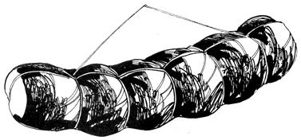

In MOTHER NO. 24, Mr. and Mrs. John Gray asked how to make blood sausage (also called blood pudding).
At hog-slaughtering time, have ready a cup and a half of partially cooked rice or barley per expected gallon of blood. (Fifty years ago we used soy flour and a small amount of wheat flour for a binder.) For each gallon of blood, dice into quarter-inch or so squares one pound of baked or boiled ham fat or dry salt fatback (Speck in German) and an equal amount of cured and cooked hog tongue. Lay out coriander, allspice, cumin or related seeds, coarse pepper and salt.
(The spicing of any sausage is a matter of individual or family preference, and Rolfs recipe resembles most such formulas in not specifying amounts. Your best bet is to overseason your first batch . . . keeping in mind that blood contains salt and that the cured meats contribute still more. Then cook a small sample of the filling, taste it and adjust the flavor accordingly. Be sure to keep records to guide your future attempts. -MOTHER. )
When you hoist the pig up in the air by its leg to stick it, catch the blood in a bucket. Then stir the fluid with your hand while it's warm. Once you gather a bit of the fiber on your palm, the coagulant will start accumulating in your hand. This takes a while. Stir and stir until you have a sphere between softball and tennis ball size (gathered from three to four gallons of blood). Mix this well with the Speck, spices and other ingredients and stuff the filling into casings. Lace the pudding with a thick cord so it won't split (see drawing).
For casings you can use the bung gut of the animal you just slaughtered. Make sure the intestine is cleaned thoroughly (turn it inside out over your hand) and save the surrounding fat to render for tallow. (You may want to keep gut from your beef slaughter for this purpose, since a pig's intestinal wall breaks more readily.) Use the large end for the blood pudding . . . the middle width is kept for leona and goose liver sausages. We used to stuff little pork sausages and wieners into sheep casings, but these days U.S.produced sheep gut generally splits. What is used comes from Australia and New Zealand.
You may prefer to get casing from a butchers' supply house: a "hank" is about the amount of gut one animal contains. Soak salted gut approximately five hours in warm water before filling. If you don't want to use natural casing, here's an alternative: When grandmother made Blutwurst in the copper washboiler on the kitchen stove, she would cook it in salt sacks or muslin sewed into bags measuring 5 by 15 inches.
When the puddings are stuffed, cook them several hours just short of a boil. Test them with a wooden skewer . . . the sausage is done when the filling doesn't bubble through the hole. Let the sausages hang free (as on poles across sawhorses) until they're dry and cooled before refrigerating. Formerly, we'd store puddings in a well-vented attic, where they'd keep six or seven months. If you want them to have a smoky flavor and a slightly lengthened storage life, put the puddings in the top of the smokehouse several days to a week. Don't let them get hot again . . . corncobs, for instance, make cool smoke.
(For a slightly different version of Blutwurst, see "Report from Dick Margulis" in MOTHER NO. 26. -MOTHER.)
|
 |
|
|